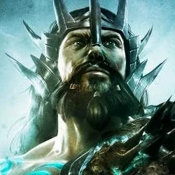

Posejdon
Bóg mórz. Brat Zeusa i Hadesa. Mieszkaniec Olimpu i twórca Trójzębu Posejdona. Posejdon urodził się jako starszy brat Hadesa i Zeusa. Ich ojciec, tytan Kronos, usłyszał od Wyroczni Aten, że któreś z jego dzieci przyniesie mu zagładę. Zjadał więc każde z nich. Każde, oprócz Zeusa, któremu udało się uniknąć śmierci z rąk ojca. Król Bogów wychował się na Wyspie Kreacji. Jako dorosły człowiek, postanowił zemścić się na ojcu. Uwolnil swych braci i rozpoczął walkę z tytanami. Najpierw była to mała potyczka, która zmieniła się w bitwę, a bitwa w wojnę. Wojnę to nazywa się Wielką Wojną.